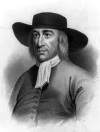

1650 yılında İngiltere’nin Derby şehrinde bir yargıç, farklı dini görüşlere sahip bir rahip olan George Fox’u (1624-1691) hapse gönderdi. Kararını açıklarken bir yandan da kendince alaycı bir ders veriyordu. Fox, taraftarlarına Tanrı’nın sözleri karşısında titremeleri gerektiğini öğütlemişti. Yargıç bu duruma gönderme yaparak vaizi ve taraftarlarını alaycı bir biçimde quakers (titreyenler) olarak adlandırdı.
O günden sonra Quakerizm olarak anılacak olan bu inancın kurucusu olan Fox, gençlik yıllarının büyük bölümünü hapishaneye girip çıkarak geçirdi. Leicestershire’de bir köyde dünyaya gelmişti. Bir dokumacının oğluydu. Hiç okula gitmemişti. 1647 yılında vaizliğe başlamadan önce sadece ayakkabı tamirciliği ve çobanlık yaparak geçiniyordu.

O yıl köyünden ayrılan Fox, İngiltere’yi yaya olarak dolaşmaya başladı. Pazar yerlerinde ve evlerde vaaz veriyordu. Resmi ve kurumsallaşmış bir ruhban sınıfının gereksiz olduğuna inanıyordu. Herkes bir vaizin rehberliğine ihtiyaç duymadan İsa Mesih’in ışığını içinde hissedebilirdi. Kiliseyi reddetti ve dini hizmetlerin her yerde verilebileceğini söyledi. Bir mağarada, bir tepede ve hatta bir tarlada bile...
Kurumsallaşmış ruhban sınıfının otoritesini reddettikleri için Fox ve takipçileri şiddetli bir baskıya maruz kaldılar. Fox’un bazı taraftarları idam edildi. Quakerler kendilerinden daha güçlü olanlara boyun eğmeyi kabul etmediler. Devlete bağlılık yemini etmiyor, yüzde onluk vergiyi ödemeye yanaşmıyorlardı. Fox aynı zamanda pasifizmi benimsemişti. Taraftarlarına orduya katılmamalarını öğütledi.
Quakerlar’a dönük baskılar 1660 yılında tahta geçen Kral 2. Charles (1630-1685) döneminde de devam etti. 1680’lere kadar tutuklandılar. Fox, 1671 yılından itibaren İrlanda, Almanya, Hollanda ve İngiltere sömürgeleri olan Jamaika, Maryland ve Rhode İsland’a giderek burada yeni takipçiler aradı. Quakerlar hâlâ bir sömürge olan Amerika’da hatırı sayılır bir varlığa ulaştılar. Günümüzde ABD’de tüm diğer ülkelerde olduğundan çok daha fazla Quaker yaşamaktadır.
Quaker karşıtı yasalar en sonunda 1689 yılında iptal edildi. Fox, iki yıl sonra Londra’da öldü.
Ek Bilgiler
1- Fox sekiz kez hapse girdi. Tam yedi farklı şehirde tanrıya küfür etmek ve halkı birbirine düşürmek gibi suçlamalar nedeniyle altı yılını demir parmaklıklar ardında geçirdi. 1653 yılında tanrıya küfür etmek suçlamasıyla idam edilmekten son anda kurtuldu.
2- Fox’un en ünlü takipçilerinden biri William Penn’di (1644-1718). Zengin bir tüccarın oğlu olan Penn, babasının isteğine karşı gelerek yirmi iki yaşında Quaker olmuştu. Penn ve Fox yakın arkadaş oldular. Penn daha sonra baskılardan bunalmış arkadaşları için bir cennet olması umuduyla Pennsylvania’yı kuracaktı.
3- 1947 yılında Nobel Barış Ödülü şiddet karşıtı duruşundan ötürü Quaker inancına verildi.